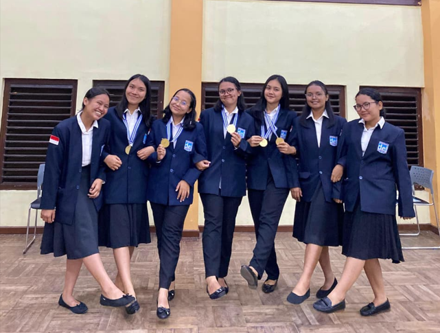
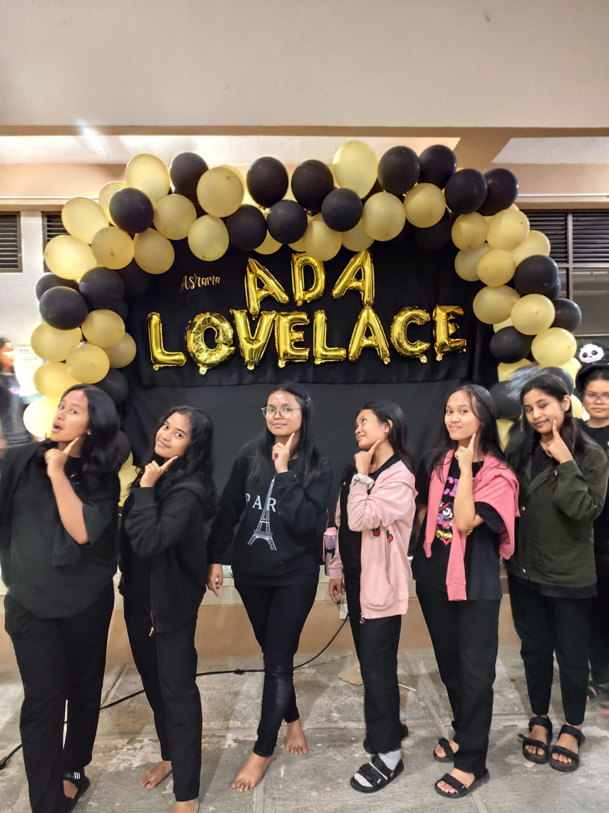
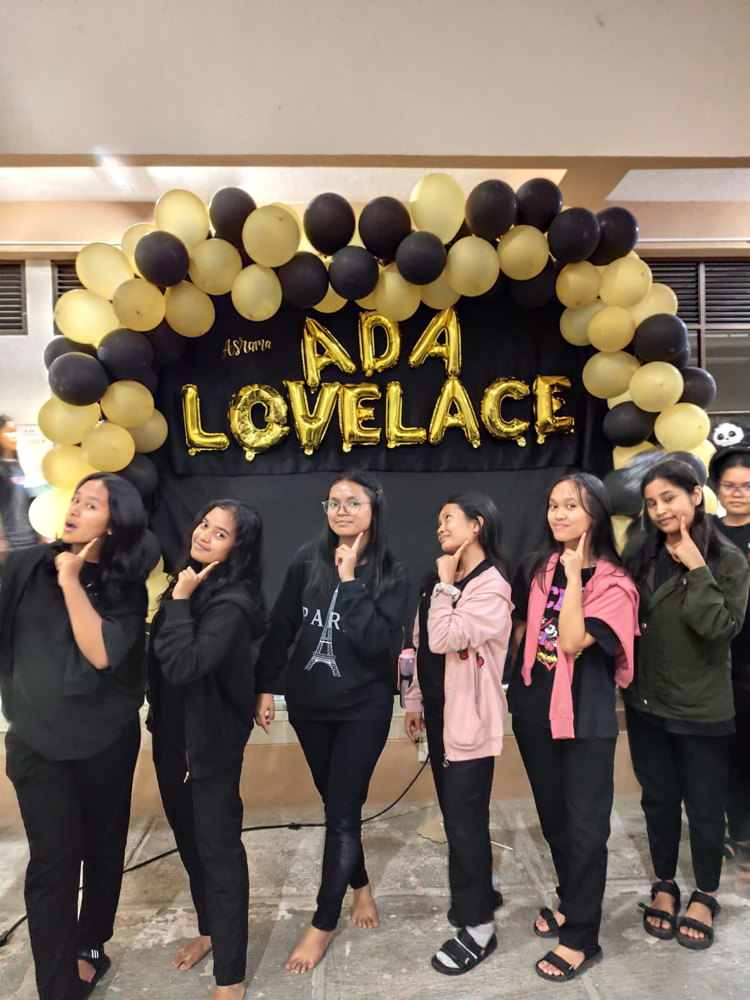

Pengalaman Menjadi Kakak Asuh
Hari pertama aku resmi menjadi kakak asuh di Institut Teknologi Del, aku merasa campuran antara bangga, gugup, sekaligus penasaran. Program ini bukan sekadar formalitas, melainkan sebuah amanah: bagaimana aku, yang hanya beberapa semester lebih tua, bisa menjadi penopang bagi adik-adik baru yang masih mencari arah.
Malam pertama di asrama, aku mendapat jadwal pertemuan kecil dengan kelompok asuhanku. Ada lima orang adik tingkat, wajah mereka terlihat canggung, beberapa tampak malu-malu, ada juga yang sudah mulai banyak bicara. Aku memulai dengan perkenalan sederhana, lalu bercerita tentang pengalaman pribadiku: bagaimana aku dulu juga pernah bingung menghadapi kuliah yang padat, bagaimana rasanya homesick, dan bagaimana akhirnya aku bisa beradaptasi. Saat aku cerita, mereka mulai tertawa, bahkan ada yang akhirnya berani mengajukan pertanyaan- pertanyaan kecil. Dari situ aku sadar, tugas kakak asuh bukan sekadar mengawasi, tetapi menciptakan rasa aman.
Menjadi kakak asuh di IT Del membuatku sadar, bahwa kepemimpinan bukan hanya soal memberi instruksi, tapi tentang hadir ketika orang lain membutuhkan. Aku belajar bahwa hubungan ini bukan satu arah. Aku menguatkan adik-adikku, tetapi pada saat yang sama, mereka juga mengajarkanku arti kedewasaan, rasa syukur, dan bagaimana sebuah komunitas bisa bertahan karena ada ikatan saling peduli.
Menjadi kakak asuh memang melelahkan, tapi bagiku, itu adalah salah satu pengalaman paling berharga selama kuliah di Institut Teknologi Del—pengalaman yang bukan hanya membentuk mereka, tetapi juga membentuk diriku sendiri.
 

Komentar
Wah kak, ceritanya menginspirasi sekali. Semoga aku juga bisa jadi kakak asuh yang baik nanti!
Aku jadi teringat masa awal masuk IT Del, peran kakak asuh memang sangat membantu adaptasi kami.
Tulisan ini hangat sekali, kerasa banget rasa peduli dan kebersamaannya. Salut kak!
Tinggalkan Komentar